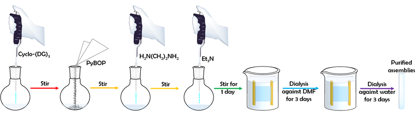
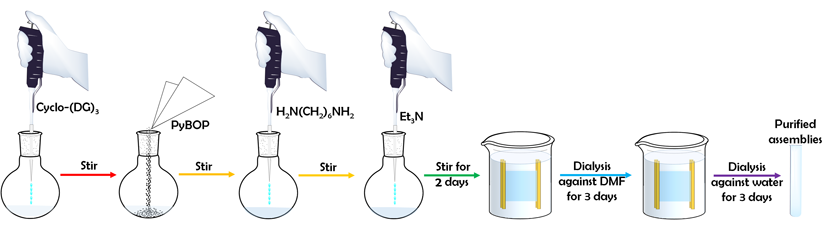
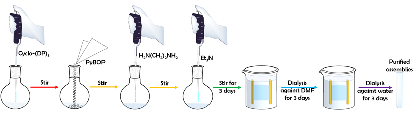
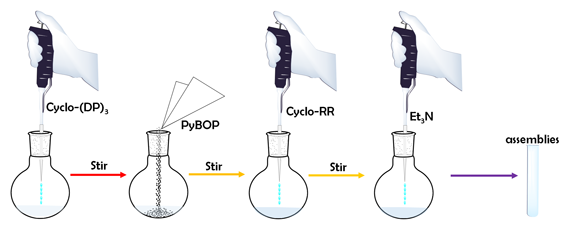

<!DOCTYPE html>
<html lang="en">
<head>
    <meta charset="utf-8">
    <meta name="viewport" content="width=device-width, initial-scale=1.0">
    <meta name="description" content="">
    <meta name="author" content="">
	
     <link rel="shortcut icon" href="images/favicon/favicon.png" type="image/x-icon">
    <link rel="icon" href="images/favicon/favicon.png" type="image/x-icon">

    <title>Nano-JLU Experiment</title>
	
    <!--Library Styles-->    
    <link href="css/bootstrap.min.css" rel="stylesheet">
    <link href="css/lib/font-awesome.css" rel="stylesheet">
    <link href="css/lib/nivo-lightbox.css" rel="stylesheet">
    <link href="css/lib/nivo-themes/default/default.css" rel="stylesheet">
	
    <!--Template Styles-->
    <link href="css/style.css" rel="stylesheet">
    <link href="css/scheme/purple.css" rel="stylesheet">
    <link href="css/docs.min.css" rel="stylesheet">
    <style type="text/css">

body {
	 background-image:url(images/logo.png);	background-size:600px 600px;
	background-repeat: no-repeat;
	background-attachment:fixed;
    background-position:center;;
}
    </style>

    <!--[if lt IE 9]>
      <script src="js/html5shiv.js"></script>
      <script src="js/respond.min.js"></script>
    <![endif]-->
</head>

<body>

    <!-- Preloader -->
    <div id="preloader">
        <div id="status"></div>
    </div>
    <!-- Site Navigation -->
  <div id="main-wrapper">
      <div id="menu">
           <nav class="navbar navbar-default " role="navigation">
                <!-- Brand and toggle get grouped for better mobile display -->
                <div class="navbar-header">
                    <button type="button" class="navbar-toggle" data-toggle="collapse" data-target="#bs-navbar-collapse">
                        <span class="sr-only">Toggle navigation</span>
                        <span class="icon-bar"></span>
                        <span class="icon-bar"></span>
                        <span class="icon-bar"></span>
                    </button>
                     <a class="navbar-brand" href="index.html#">
                        
                    </a>
                </div>

                <!-- Collect the nav links, forms, and other content for toggling -->
                <div class="collapse navbar-collapse" id="bs-navbar-collapse">
                    <ul class="nav navbar-nav nav-stacked">
<!-- delete li class=“active" a class="sscroll"-->
                        <li><a href="index.html">Home</a></li><li><a href="introduction.html">Introduction</a></li>
                                                <li><a href="design.html">Design</a></li>
						<li><a href="protocol.html">Experiment</a></li>
                        <li><a href="result.html">Result</a></li>

                        <li><a href="labbook.html">Labbook</a></li>
                        <li><a href="team.html">Team</a></li>
                    </ul>
                </div>
                <!-- /.navbar-collapse -->
        </nav>
    </div>
    <div class="container bs-docs-container" style="margin-left:220px;">

      <div class="row">
        <div class="col-md-9" role="main">
<div class="bs-dos-section">
	<h2 id="overall" class="page-header">An Overall View</h2>
<div class="labbooktablediv" style="width:820px"></div></div>

<div class="bs-dos-section">
  <h2 id="chemicals" class="page-header protocolh">Chemicals</h2>
  <p>Cyclo-(DP)<sub>3</sub> and cyclo-(DG)<sub>3</sub> were purchased from SynPeptide Co. Ltd.. Cyclo-RR was purchased from ChinaPeptides Co. Ltd. (Shanghai, China).</p></div>

<div class="bs-dos-section">
  <h2 id="syntheisiscyc" class="page-header protocolh">Synthesis of Cyclic Peptides</h2>
  <p>The linear peptide precursor was synthesized using solid phase peptide synthesis (SPPS) method. The cyclic peptides were synthesized either in a dilute DMF solution (0.1 mmol/L) or using ion-assisted method (5 mmol/L). The cyclic peptides used for self-assembly were purchased from the above-mentioned companies and directly used without further purification.</p></div>
  
<div class="bs-dos-section">
  <h2 id="assemblydgeh" class="page-header protocolh">Assemblies from Cyclo-(DG)<sub>3</sub> and Ethylenediamine</h2>
  <p>0.50 mg (0.00097 mmol) of cyclo-(DG)<sub>3</sub> was dissolved in 0.5mL of DMF at room temperature. Following this, 30.25 mg (0.05812mmol) of PyBOP and 4.5mL of DMF were added to the flask under stirring condition. Subsequently, 1.0 μL (0.014 mmol) of ethylenediamine was added, followed by the addition of 4.0 μL (0.029mmol) of TEA. The mixture was stirred for 24 hours at room temperature to produce nano assemblies.</p>
  <div class="labbooktablediv" style="width:830px"></div>
  <p>0.50 mg (0.00097 mmol) of cyclo-(DG)<sub>3</sub> was dissolved in 0.5mL of DMF at room temperature. Following this, 151.20 mg (0.29060 mmol) of PyBOP and 4.5mL of DMF were added to the flask under stirring condition. Subsequently, 4.8 μL (0.073 mmol) of ethylenediamine was added to the flask, followed by the addition of 4.0 μL (0.029mmol) of TEA. The mixture was stirred for 24 hours at room temperature to produce nano assemblies.</p></div>
  
 <div class="bs-dos-section">
  <h2 id="assemblydg16" class="page-header protocolh">Assemblies from Cyclo-(DG)<sub>3</sub> and 1, 6-diaminohexane</h2>
  <p>0.50 mg (0.00097 mmol) of cyclo-(DG)<sub>3</sub> was dissolved in 0.5mL of DMF at room temperature. Following this, 30.25 mg (0.05812 mmol) of PyBOP was added to the reaction system under stirring condition. Subsequently, 1.69 mg (0.0145 mmol) of 1, 6-diaminohexane was dissolved in 1mL of DMF and added to the flask, followed by the addition of 4.0 μL (0.029 mmol) of TEA. Then, another 3.5 mL of DMF was added to the reaction system and stirred for 48h at room temperature.</p>
  <div class="labbooktablediv" style="width:830px"></div>
  <p>0.50 mg (0.00097 mmol) of cyclo-(DG)<sub>3</sub> was dissolved in 0.5mL of DMF at room temperature. Following this, 151.20 mg (0.29060 mmol) of PyBOP was added to the reaction system under stirring condition. Subsequently, 8.4 mg (0.073 mmol) of 1, 6-diaminohexane was dissolved in 1mL of DMF and added to the flask, followed by the addition of 4.0 μL (0.029 mmol) of TEA. Then, another 3.5 mL of DMF was added to the reaction system and stirred for 48h at room temperature.</p></div>
 
  <div class="bs-dos-section">
  <h2 id="assemblydpeh" class="page-header protocolh">Assemblies from Cyclo-(DP)<sub>3</sub> and Ethylenediamine</h2>
  <p>0.50 mg (0.00079 mmol) of Cyclo-(DP)<sub>3</sub> was dissolved in 0.5mL of DMF at room temperature. Following this, 24.54 mg (0.04716 mmol) of PyBOP and 3.3 mL of DMF were added to the flask under stirring condition. Subsequently, 0.8 μL (0.01 mmol) of ethylenediamine was added to the flask, followed by the addition of 3.3 μL (0.024 mmol) of TEA. The mixture was stirred for 72 hours at room temperature to produce nano assemblies.</p>
    <div class="labbooktablediv" style="width:830px"></div>
  <p>0.50 mg (0.00079 mmol) of Cyclo-(DP)<sub>3</sub> was dissolved in 0.5mL of DMF at room temperature. Following this, 122.71 mg (0.23580 mmol) of PyBOP and 3.3 mL of DMF were added to the flask under stirring condition. Subsequently, 3.9 μL (0.059 mmol) of ethylenediamine was added to the flask, followed by the addition of 3.3 μL (0.024mmol) of TEA. The mixture was stirred for 72 hours at room temperature to produce nano assemblies.</p></div>
  
   <div class="bs-dos-section">
  <h2 id="assemblydp16" class="page-header protocolh">Assemblies from Cyclo-(DP)<sub>3</sub> and 1, 6-diaminohexane</h2>
  <p>0.50 mg (0.00079 mmol) of Cyclo-(DP)<sub>3</sub> was dissolved in 0.5mL of DMF at room temperature. Following this, 24.54 mg (0.04716 mmol) of PyBOP and 2.3 mL of DMF were added to the flask under stirring condition. Subsequently, 1.37 mg (0.0118 mmol) of 1, 6-diaminohexane was dissolved in 1 mL DMF and added to the flask, followed by the addition of 3.3 μL (0.024mmol) of TEA. The mixture was stirred for 72 hours at room temperature to produce nano assemblies.</p>
    <div class="labbooktablediv" style="width:830px"></div>
  <p>0.50 mg (0.00079 mmol) of Cyclo-(DP)<sub>3</sub> was dissolved in 0.5 mL of DMF at room temperature. Following this, 122.71 mg (0.23580 mmol) of PyBOP and 2.3 mL of DMF were added to the flask under stirring condition. Subsequently, 6.85 mg (0.0590 mmol) of 1, 6-diaminohexane was dissolved in 1 mL DMF and added to the flask, followed by the addition of 3.3 μL (0.024mmol) of TEA. The mixture was stirred for 72 hours at room temperature to produce nano assemblies.</p></div>

  <div class="bs-dos-section">
  <h2 id="assemblydprr" class="page-header protocolh">Assemblies from Cyclo-(DP)<sub>3</sub> and Cyclo-RR</h2>
  <p>0.10 mg (0.00016 mmol) of Cyclo-(DP)<sub>3</sub> was dissolved in 0.2 mL of DMF at room temperature. Following this, 0.74 mg (0.0024 mmol) of cyclo-RR was dissolved in 0.2 mL of DMF and then added to the flask. Another 0.37 mL of DMF was added to the reaction system and the mixture was stirred for 72 hours at room temperature to produce nano assemblies.</p>
    <div class="labbooktablediv" style="width:580px"></div>
  <p>0.10 mg (0.00016 mmol) of Cyclo-(DP)<sub>3</sub> was dissolved in 0.2 mL of DMF at room temperature. Following this, 3.68 mg (0.012 mmol) of cyclo-RR was dissolved in 0.2 mL of DMF and then added to the flask. Another 0.37 mL of DMF was added to the reaction system and the mixture was stirred for 72 hours at room temperature to produce nano assemblies.</p></div>
  
  <div class="bs-dos-section">
  <h2 id="purification" class="page-header protocolh">Purification</h2>
  <p>All the assemblies synthesized using amination reaction were purified by three days of dialysis against DMF and another three days of dialysis against water. Then, the assemblies were enrichd using ultrafiltration membranes (100KD, Millipore). The assemblies constructed through electrostatic interaction were directly characterized without purification.</p>
</div>

  <div class="bs-dos-section">
  <h2 id="preorganization" class="page-header protocolh">Preorganization of the Monomers</h2>
  <p>0.10 mg (0.00016 mmol) of Cyclo-(DP)<sub>3</sub> was dissolved in 0.2 mL of DMF at room temperature. Following this, 0.74 mg (0.0024 mmol) of cyclo-RR was dissolved in 0.2 mL of DMF and then added to the flask. Another 0.37 mL of DMF was added to the reaction system. The size of the assemblies was monitored by DLS.</p>
    <div class="labbooktablediv" style="width:301px"></div>
  <p>0.50 mg (0.00079 mmol) of Cyclo-(DP)<sub>3</sub> was dissolved in 0.5 mL of DMF at room temperature. Following this, 1.37 mg (0.0118 mmol) of 1, 6-diaminohexane was dissolved in 1 mL of DMF and then added to the flask. Another 2.3 mL of DMF was added to the reaction system.</p>
</div>

<div class="bs-dos-section">
  <h2 id="dynamic" class="page-header protocolh">Dynamic Light Scattering and Zeta Potential Measurements</h2>
  <p>The size and the zeta potential of the cyclo-peptide complexes were measured by dynamic light scattering using a Zetasizer NANO ZS90 (Malvern Instruments, UK). Three repeat measurements were made for each complex.</p>
  </div>
  
  <div class="bs-dos-section">
  <h2 id="preplas" class="page-header protocolh">Preparation of Assemblies/Plasmid DNA (pLVX-shRNA1) Complex</h2>
  <p>The assemblies/plasmid DNA (pLVX-shRNA1) complex was prepared as described below: 20 μL assemblies was mixed with 2 μL, 79 ng/μL solution of plasmid DNA (pLVX-shRNA1) ; All the plasmid DNA are generously donated by Dr. Haihong Zhang from Engineering Laboratory for AIDS Vaccine, Jilin University. The resulting complexes were kept for 24 hours at room temperature prior to use.</p>
  </div> 
  
<div class="bs-dos-section">
  <h2 id="prerna" class="page-header protocolh">Preparation of Assemblies/ FAM-tagged OligoRNA Complex</h2>
  <p>The assemblies/ FAM-tagged oligoRNA complex was prepared as described below: 100 μL assemblies was mixed with 4 μL, 10 μmol/L solution of FAM-tagged oligoRNA (Sense 5�UUC UCC GAA CGU GUC ACG UTT-3�; Antisense 5�ACG UGA CAC GUU CGG AGA ATT-3� labelled with carboxyfluorescein -5- succimidyl ester (5’FAM) . All the RNAs mentioned above were synthesized by GenePharma Co. LTD., Shanghai, China. The resulting complexes were kept overnight at room temperature prior to use.</p>
  </div> 
  
  <div class="bs-dos-section">
  <h2 id="cellculture" class="page-header protocolh">Cell Culture and Transfection</h2>
  <p>Human breast cancer (MCF-7) cells were maintained in RPMI-1640 growth medium (Hyclone, South Logan, USA) supplemented with 10% fetal bovine serum (FBS, Gibco, Grand Island, USA), 1% v/v penicillin/ streptomycin solution (10000 U mL<sup>-1</sup>/10 mg mL<sup>-1</sup>) at 37�in an atmosphere of 5% CO<sub>2</sub>. MCF-7 cells were seeded onto 24-well plates (NEST, Wuxi, China) at a density of 5.0 × 10<sup>5</sup> cells per well and allowed to adhere overnight. The cells were serum starved and treated with 500μl of the oligo RNA, or assemblies/oligo RNA complexes. Following 6 hours of incubation, the plate was washed three times by PBS and the cells were incubated with fresh serum-containing medium for another 2 hours at 37�in an atmosphere of 5% CO<sub>2</sub> before further analysis. Images of cells were obtained by fluorescence microscope (OLYMPUS IX71, Japan)</p>
  </div> 
  
  
 
        </div>
        <div class="col-md-3">
          <div class="bs-docs-sidebar hidden-print hidden-xs hidden-sm affix" role="complementary">
            <ul class="nav bs-docs-sidenav">

			 <li  class="active">
   <a href="#overall">An Overall View</a>
</li>
              
 <li><a href="#chemicals">Chemicals</a>
<ul class="nav">
 <li><a href="#syntheisiscyc">Synthesis of Cyclic Peptides</a></li>
 <li><a href="#assemblydgeh">Assemblies from Cyclo-(DG)<sub>3</sub> and 

Ethylenediamine</a></li>
</ul></li>

 <li><a href="#assemblydg16">Assemblies from Cyclo-(DG)<sub>3</sub> and 1, 6-

diaminohexane</a></li>
 
 <li><a href="#assemblydpeh">Assemblies from Cyclo-(DP)<sub>3</sub> and 

Ethylenediamine</a></li>

 <li><a href="#assemblydp16">Assemblies from Cyclo-(DP)<sub>3</sub> and 1, 6-

diaminohexane</a></li> 

 <li><a href="#assemblydprr">Assemblies from Cyclo-(DP)<sub>3</sub> and Cyclo-

RR</a></li>
 <li><a href="#purification">Purification</a></li>
 <li><a href="#preorganization">Preorganization of the Monomers</a></li>
 <li><a href="#dynamic">Dynamic light scattering and zeta potential measurements</a></li>
  <li><a href="#preplas">Preparation of Assemblies/Plasmid DNA (pLVX-shRNA1) Complex</a></li>
 <li><a href="#prerna">Preparation of Assemblies/oligo RNA complex</a></li>
 
  <li><a href="#cellculture">Cell Culture and Transfection</a></li>
			
			
				  
            </ul>
             <a class="back-to-top" href="#top">
              <p style="font-size:14px;
              color:#000">Back to top</p>
            </a>
            
          </div>
        </div>
      </div>
    </div>
    </div>

    <!-- Footer
================================================== -->
<footer class="bs-docs-footer" role="contentinfo">
  <div class="container">
    

    <p>Designed and built by @Nano-JLU</p>
    <p> Welcome to contact us: <a href="mailto:biomodnanojlu2016@gmail.com">Nano-JLU</a> biomodnanojlu2016@gmail.com</p>
    <p>Copyright © 2016 BIOMOD Nano-JLU 2016 All Rights Reserved.</p>
    
  </div>
</footer>


    <!-- Library Scripts -->
    <script src="js/jquery-1.10.2.min.js"></script>
    <script src="js/lib/jquery.preloader.js"></script>
    <script src="js/lib/nivo-lightbox.min.js"></script>
    <script src="js/bootstrap.min.js"></script>
    <script src="js/lib/jquery.superslides.min.js"></script>
    <script src="js/lib/smoothscroll.js"></script>
    <script src="js/lib/jquery.sudoslider.min.js"></script>
    <script src="js/lib/jquery.bxslider.min.js"></script>
    <script src="js/lib/jquery.mixitup.min.js"></script>
    <script src="js/lib/jquery.backtotop.js"></script>
    <script src="js/lib/jquery.carouFredSel-6.2.1-packed.js"></script>
    <script src="js/lib/retina.min.js"></script>
    <script src="js/docs.min.js"></script>
<script type="text/javascript">
	$(function () { $('#collapseFour').collapse({
		toggle: false
	})});
	$(function () { $('#collapseTwo').collapse('show')});
	$(function () { $('#collapseThree').collapse('toggle')});
	$(function () { $('#collapseOne').collapse('hide')});</script>  

    
    
    <!-- Custom Script -->   
<script src="js/main.js"></script>

<script type="text/javascript">
var _bdhmProtocol = (("https:" == document.location.protocol) ? " https://" : " http://");
document.write(unescape("%3Cscript src='" + _bdhmProtocol + "%3Fbdb993b828cbe079a7fbc1a951f44726' type='text/javascript'%3E%3C/script%3E"));
</script>

  

<div id="global-zeroclipboard-html-bridge" class="global-zeroclipboard-container" title="" style="position: absolute; left: 0px; top: -9999px; width: 15px; height: 15px; z-index: 999999999;" data-original-title="Copy to clipboard">      <object classid="clsid:d27cdb6e-ae6d-11cf-96b8-444553540000" id="global-zeroclipboard-flash-bridge" width="100%" height="100%">         <param name="movie" value="/assets/flash/ZeroClipboard.swf?noCache=1474792336453">         <param name="allowScriptAccess" value="sameDomain">         <param name="scale" value="exactfit">         <param name="loop" value="false">         <param name="menu" value="false">         <param name="quality" value="best">         <param name="bgcolor" value="#ffffff">         <param name="wmode" value="transparent">         <param name="flashvars" value="trustedOrigins=v3.bootcss.com%2C%2F%2Fv3.bootcss.com%2Chttp%3A%2F%2Fv3.bootcss.com">         <embed src="/assets/flash/ZeroClipboard.swf?noCache=1474792336453" loop="false" menu="false" quality="best" bgcolor="#ffffff" width="100%" height="100%" name="global-zeroclipboard-flash-bridge" allowscriptaccess="sameDomain" allowfullscreen="false" type="application/x-shockwave-flash" wmode="transparent" pluginspage="http://www.macromedia.com/go/getflashplayer" flashvars="trustedOrigins=v3.bootcss.com%2C%2F%2Fv3.bootcss.com%2Chttp%3A%2F%2Fv3.bootcss.com" scale="exactfit">                </object></div><svg xmlns="http://www.w3.org/2000/svg" width="64" height="64" viewBox="0 0 64 64" preserveAspectRatio="none" style="visibility: hidden; position: absolute; top: -100%; left: -100%;"><defs></defs><text x="0" y="10" style="font-weight:bold;font-size:10pt;font-family:Arial, Helvetica, Open Sans, sans-serif;dominant-baseline:middle">64x64</text></svg>

</body>

</html>
